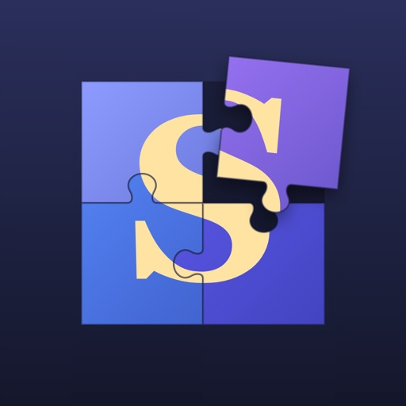

Stillpiece
Jigsaw puzzles made from real works of art, from Van Gogh to Hokusai. No ads, no accounts, no internet needed, no rush.
Van Gogh'dan Hokusai'ye gerçek sanat eserlerinden yapbozlar. Reklam yok, hesap yok, internet gerekmez, acele yok.
Features
Özellikler
- Real art — public-domain paintings from the Cleveland Museum of Art, plus nature and 1940s photos from the US National Park Service and the Library of Congress. No AI-generated pictures.
- At your own pace — seven levels from Beginner to Grandmaster, 6 to 500 pieces.
- Two ways to play — pieces in a tray, or scattered on a table. Zoom, sort out edge pieces, peek at the preview.
- Your own photos — pick or take a photo, crop it and choose the piece count. It never leaves your device.
- A puzzle every day — solve the daily puzzle and grow your streak.
- Nothing gets lost — unfinished puzzles save automatically; progress syncs between iPhone and iPad with iCloud.
- Light and dark themes, your choice of table color, English and Turkish.
- Gerçek eserler — Cleveland Museum of Art'ın kamu malı tabloları; ABD Milli Parklar Servisi ve Library of Congress'ten doğa ve 1940'lar fotoğrafları. Yapay zekâyla üretilmiş görsel yok.
- Kendi hızında — Başlangıç'tan Büyük Usta'ya yedi seviye, 6'dan 500 parçaya.
- İki oyun biçimi — parçalar tepside ya da masaya dağılmış. Yakınlaştır, kenar parçalarını ayır, önizlemeye bak.
- Kendi fotoğrafların — bir fotoğraf seç ya da çek, kırp, parça sayısını belirle. Fotoğraf cihazından çıkmaz.
- Her gün bir yapboz — günün yapbozunu çöz, art arda günlerle serini büyüt.
- Hiçbir şey kaybolmaz — yarım kalan yapboz otomatik kaydedilir; ilerleme iPhone ve iPad arasında iCloud ile eşitlenir.
- Açık ve koyu tema, masa rengi seçimi, Türkçe ve İngilizce.
Screenshots
Ekran görüntüleri
Premium
Premium
Free play covers every level up to Hard, with 10 puzzles per level. Premium (monthly or yearly, cancel anytime) adds unlimited puzzles, the 300 and 500 piece levels, unlimited hints and new artworks every month.
Ücretsiz sürümde Zor'a kadar her seviyede 10 yapboz vardır. Premium (aylık ya da yıllık, istediğin zaman iptal) sınırsız yapboz, 300 ve 500 parçalı seviyeler, sınırsız ipucu ve her ay yeni eserler getirir.
Private by design
Gizlilik öncelikli
No accounts, no ads, no tracking. The app collects only anonymous crash reports (which you can turn off) and anonymous puzzle statistics, nothing linked to you.
Hesap yok, reklam yok, takip yok. Uygulama yalnızca adsız çökme raporları (kapatılabilir) ve adsız yapboz istatistikleri toplar; hiçbiri seninle ilişkilendirilmez.